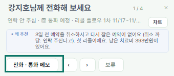

정기검진 리콜은 아무나가 아니라 VIP부터
정기검진 리콜은 「오래 안 온 사람 전부」보다 「꼬박꼬박 오시던 분」부터 거세요. 잘 오시던 분은 전화 한 통에 다시 오시고, 우리 치과에서 멀어지지 않아요. 한정된 전화 시간을 성공할 분께 쓰는 거예요.
그냥 정기검진 리콜은 왜 잘 안 될까
현장에서는마지막 내원이 오래된 분을 쭉 뽑아 순서대로 걸면, 한 번 오고 안 오신 분·이사 가신 분이 섞여 있어서 대부분 안 받거나 「생각해 볼게요」로 끝나요.
정기검진은 아픈 데가 없을 때 오는 내원이라, 원래 우리 치과를 믿고 다니던 분이 아니면 잘 움직이지 않아요. 그래서 대상을 먼저 좁혀야 해요.
우리 치과 VIP는 누구?
- 정기검진·스케일링을 꾸준히 받아 오신 분
- 최근 몇 년 동안 자주 오신 단골
- 가족이 함께 다니시는 분
- 예약을 잘 지키고, 전화를 잘 받아 주시는 분
실제 기록으로 보면데스크알리미를 만든 치과의 리콜 전화 747번을 되짚어 보니, 검진·스케일링을 다니시던 분(3년간 검진·스케일링 3번 이상)은 전화 뒤 60일 안에 22%가 오셨고 아닌 분은 7%였어요. 3년간 11번 이상 오신 단골도 20% 대 7%. 재미있는 건 돈을 많이 쓰신 분·남은 치료비가 큰 분은 평균보다 높지 않았다는 거예요. VIP는 「큰 손님」이 아니라 「꼬박꼬박 오시는 분」이에요.
이런 분들은 주기가 조금 밀렸을 때 먼저 연락드리는 것만으로 다시 오세요. 멀어지기 전에 붙잡는 게 새 환자를 데려오는 것보다 훨씬 쉬워요.
VIP께는 이렇게
본인 확인 뒤 그대로 읽으면 되는 멘트○○님, 늘 정기검진 잘 챙겨 오셨는데 이번엔 시기가 조금 지나서 연락드렸어요. 지난번처럼 검진이랑 스케일링 같이 봐 드릴게요. 편하신 날 있으세요?
시간 배분 요령
하루 리콜 시간이 30분이라면, VIP·환자가 말한 때·최근 치료중단처럼 성공하기 쉬운 분께 먼저 쓰고, 오래된 명단은 남는 시간에. 같은 시간에 채우는 예약이 달라져요.

자주 묻는 것
정기검진 주기는 보통 얼마예요?
치과마다 다르지만 보통 6개월마다 검진을 권하는 곳이 많아요. 만 19세 이상 스케일링 건강보험은 1년에 한 번(1월~12월 기준)이라, 연말 전에 챙겨 드리면 반가워하세요.
데스크알리미로는 이렇게
데스크알리미 리콜은 같은 명단 안에서도 검진·스케일링 다니심, 단골, 안 오신 지 짧은 분을 점수로 앞에 세워요. 지난 리콜 전화 2,716번으로 되감아 보니 점수 위 1/5은 60일 안에 40%, 맨 아래 1/5은 11%가 오셨어요. 카드마다 왜 추천(예: 「최근 1년 ○번 오신 단골이에요」)이 있어서 누구부터 걸지 고민하지 않아도 돼요.
📄 리콜보다 먼저 써 보면 좋은 기능 — 보험서류 5종 한 번에 만들기 →
✔ 덴트웹은 그대로 쓰고 옆에 막대 하나만 · ✔ 덴트웹 기록은 바꾸지 않아요 · ✔ 데스크알리미를 만든 치과 데스크가 매일 쓰는 도구
데스크알리미 = 덴트웹 쓰는 치과 데스크 화면 구석에 뜨는 막대형 도우미예요. 덴트웹은 그대로 쓰고 옆에 하나만 더 띄워요.
출처·근거: 국민건강보험공단 — 치석제거 연 1회 급여
올린 날 2026-11-23 · 고친 날 2026-11-23